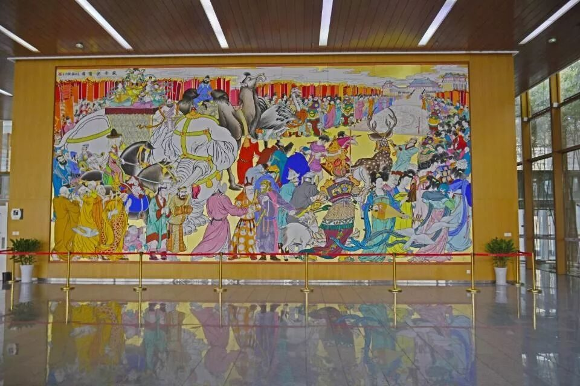
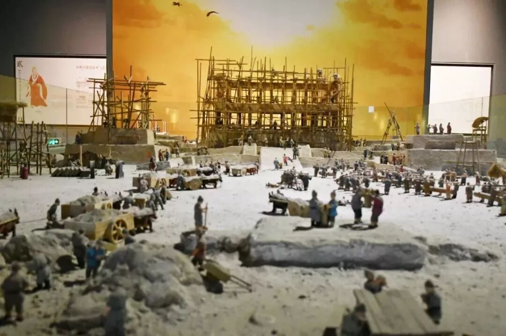
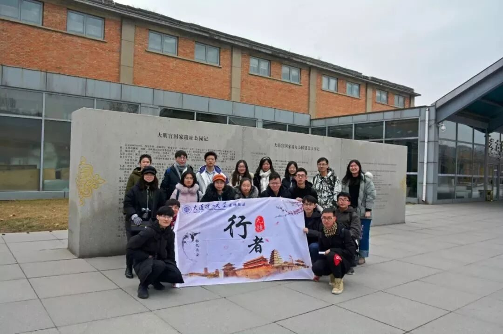
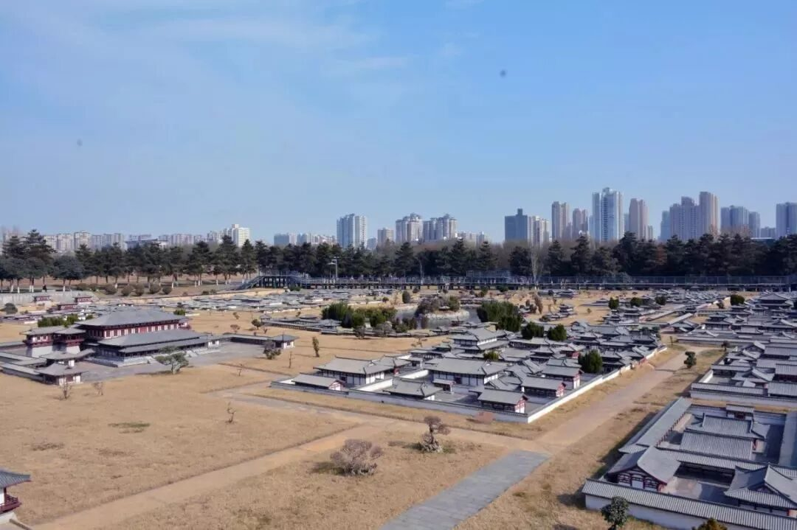

【行者无疆·韶忆长安】 梦回大唐

行者无疆·韶忆长安 | 梦回大唐
忆昔开元全盛日，小邑犹藏万家室。
稻米流脂粟米白，公私仓廪俱丰实。
九州道路无豺虎，远行不劳吉日出。
齐纨鲁缟车班班，男耕女桑不相失。
—杜甫《忆昔》
没有比枫桥更波澜的心情，摇荡清秋的月亮；没有比李白更易醉的豪肠，张口一吐，就是半个盛唐。李商隐的秋池浇开紫丁香的惆怅，渭城的朝雨沾湿王维的衣裳。大唐，正是这样在民族精神疆域中向世人展示着盛世的壮美，艺术情怀的宏广。

大明宫国家遗址公园
“金阙晓钟开万户，玉阶仙仗拥千官”。有“千宫之宫”美誉的唐大明宫是盛唐时期最富盛名的宫殿群。唐朝，21位皇帝中有17位在此处理朝政，顺其自然，大明宫也由此成为公元7—9世纪世界闻名的巅峰。

若不是走在复原的遗址之上，或许真的无法肯定那些设计图纸是如何做到跃然纸上；若不是进行了前期深入的了解学习，或许真的无法想象考古研究，文物保护工作者是克服了怎样阻力将这样庞大的复建工程完成；若不是询问探讨了设计规划背后的故事，或许我们永远不知道伴随着多方的努力，在古迹保护与城市发展之中，西安，一直在路上。

一行十数人，各有所见，各有所闻，各有所思，各有所感。不论是收获新知的欣然，还是先辈智慧的称赞，抑或民族文化的慨叹......让园中景物在回首之后，树木蔚然成势，草叶历尽风雨，土地厚重磅礴。大唐，她是史册里深藏的墨迹，带给人无法言说的美丽和忧愁；她是云彩里镌刻的记忆，留给世间难以忘却的厚重和大气。



唐朝，她庄严地站在中华五千年的青史中，以博大的文化情怀和丰繁的艺术成就笑傲同侪。夜光杯里的葡萄酒闪闪发亮，醉了一个又一个世纪。朝霞从此耀眼，残阳从此灿烂，中国从此芳醇神气，永久氲香迷人。
唐朝，她陶醉和震响了整个生命的世界。

几天的调研行，让大家褪去了初到西安时的青涩，也已渐渐摸索出了属于自己的行者标签。不再羞涩，不再陌生，不再胆怯，我们愿意抬起头，伸出手，睁开眼眸，露出笑容，敢于向同伴分享，向生人靠近，向权威发声。

图片丨丛雨晴 王一岚
文字丨李竹晴
责编丨邓子孚
审核丨邓子孚 潘雯雯
行者无疆实践团
QQ：2758025831

随行者一起认识世界
长按二维码关注